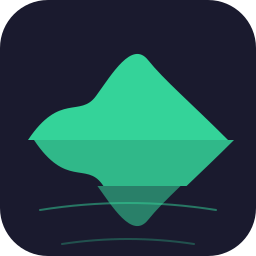

分形 Logo · 水面镜像错位方向
主体图形 + 倒影，倒影切 3 条水平切片各自水平错位（涟漪折射感），底部涟漪线
方案 V1 · 山峦 + 涟漪错位
圆润山峦剪影，倒影 3 片错位（6/0/10px），底部涟漪线 —— 完整「水面镜像」意象

暗底 / 亮底 / 小尺寸
方案 V2 · 大错位无涟漪
同山峦，错位加大（16/4/22px）、无涟漪线 —— 更抽象，突出「错位」本身
暗底 / 亮底 / 小尺寸
方案 V3 · 几何双峰
尖峰几何双峰 + 错位镜像 + 涟漪 —— 更硬朗几何
暗底 / 亮底 / 小尺寸
选定后生成全套尺寸替换；也可微调：错位量 / 切片数 / 涟漪线 / 主体形状 / 配色